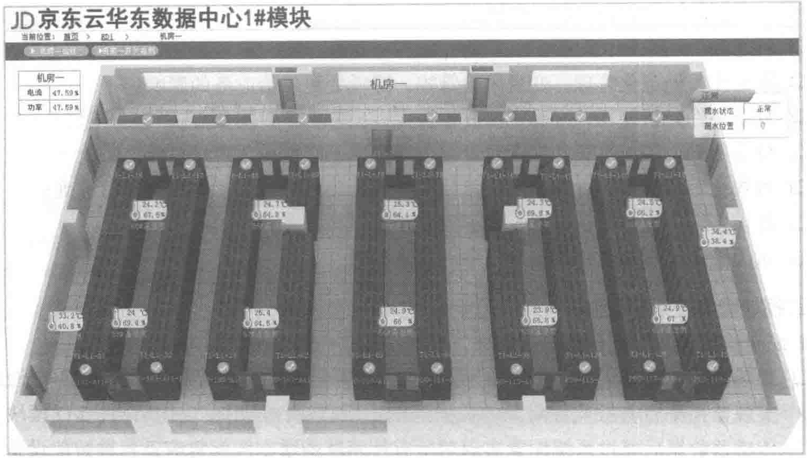
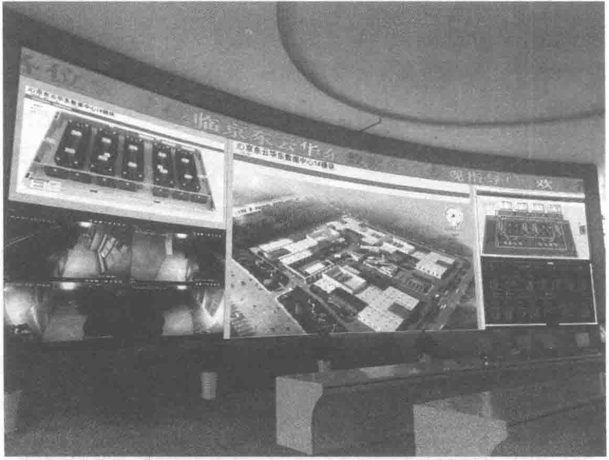

3. 园区级监控系统架构
京东云（华东）数据中心综合智能监控管理平台，可以实现对数据中心各设备和系统的统一监控与管理，减轻维护人员工作负担，同时提高整个系统的运行可靠性、稳定性和兼容性、可扩性，实现机房的科学管理。ECC控制中心大屏幕系统如图10-57所示。

PDF第320页 · 已逐页校对

京东云（华东）数据中心综合智能监控管理平台，可以实现对数据中心各设备和系统的统一监控与管理，减轻维护人员工作负担，同时提高整个系统的运行可靠性、稳定性和兼容性、可扩性，实现机房的科学管理。ECC控制中心大屏幕系统如图10-57所示。
